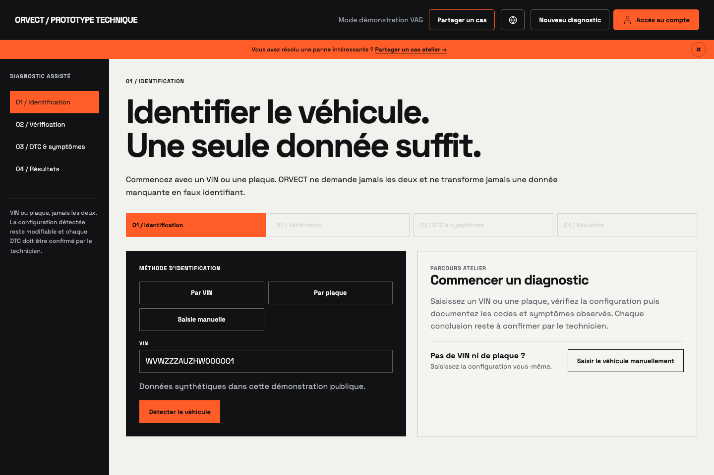
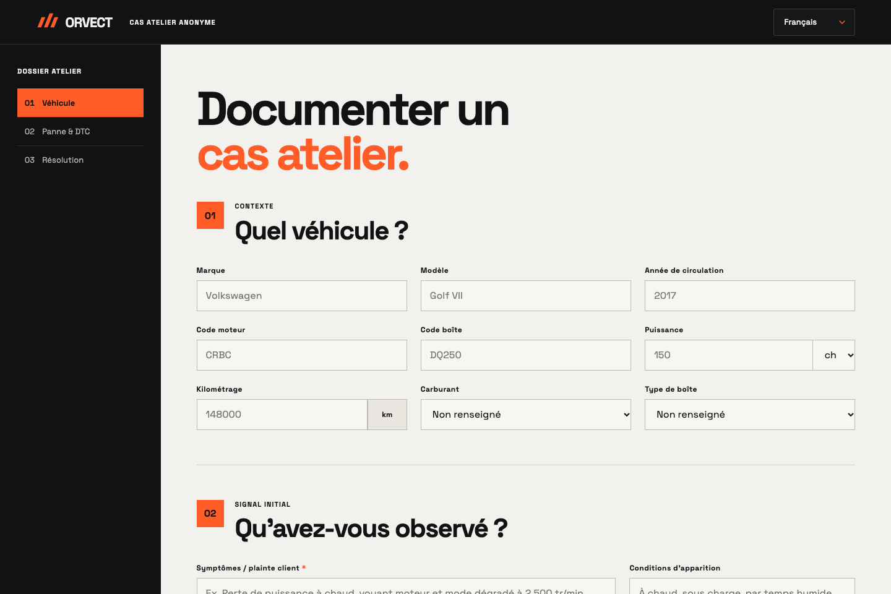

ORVECT — Au-delà du code défaut.

Un code ouvre une question. La méthode construit la réponse.
ORVECT réévalue le dossier après chaque contrôle : ce que vous mesurez change ce qu’il vous propose ensuite.
Contexte
Partir du véhicule. Sa configuration donne son sens à chaque signal ; une correspondance incertaine reste incertaine.
Preuves
Relier codes, mesures et sources, pour et contre chaque cause. Une définition indisponible est signalée comme telle.
Clarté
Identifier le prochain contrôle et expliquer pourquoi. La décision reste celle du technicien.
Chaque signal. Une vue d’ensemble.
Explorez les liens entre le véhicule, ses systèmes et les preuves.
40 diagnostics analysés par ORVECT.
Dont 28 enregistrés hors suivi automatique. Chaque nouveau diagnostic est compté après sa première analyse réussie.
Ce que vous lui donnez. Ce qu’il vous rend.
Des données d’atelier en entrée. Une direction argumentée en sortie.
- VIN ou plaque
- Codes défauts confirmés
- Symptômes
- Mesures
- Photos
- Causes probables, classées
- Éléments pour et contre
- Sources de chaque définition
- Le prochain contrôle
- Périmètre
- Groupe Volkswagen d’abord : VW, Audi, Škoda, SEAT, CUPRA, VW Utilitaires.
- Statut
- Prototype technique, bêta ouverte aux ateliers.
Ce qu’ORVECT ne fera jamais.
Ces limites sont tenues par du code exécuté après la réponse du modèle, pas seulement par des consignes.
- Confirmer définitivement une panne.
- Prescrire le remplacement d’une pièce.
- Déclarer un véhicule apte ou inapte à rouler.
- Inventer une définition de code. Sans source fiable, ORVECT s’abstient et le dit.

Chaque panne résolue rend le suivant plus juste.
Les ateliers documentent leurs cas en quelques minutes. ORVECT s’appuie sur l’expérience accumulée sur des véhicules comparables, sans jamais la confondre avec une preuve.
Deux façons d’avancer avec ORVECT
Vous êtes un atelier ou un technicien
Testez ORVECT sur vos cas réels pendant la bêta et aidez-nous à l’ajuster aux réalités de l’atelier. Priorité aux véhicules du groupe Volkswagen.
Rejoindre la bêtaVous êtes investisseur ou partenaire
Parlez directement à Nolann Petri, fondateur et CEO : la méthode, les données, la feuille de route.
- Nolann PetriFondateur & CEO · Stockholm
- Lesly HesseCofondateur, opérations techniques · France